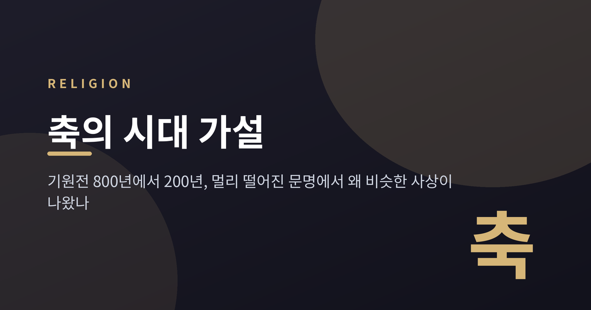
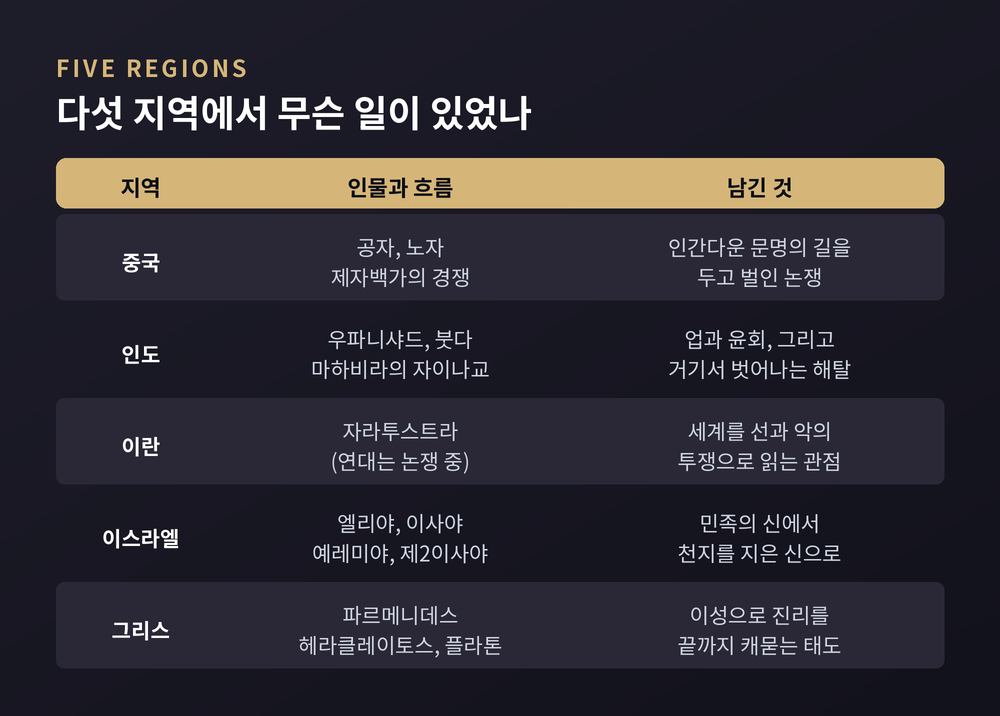
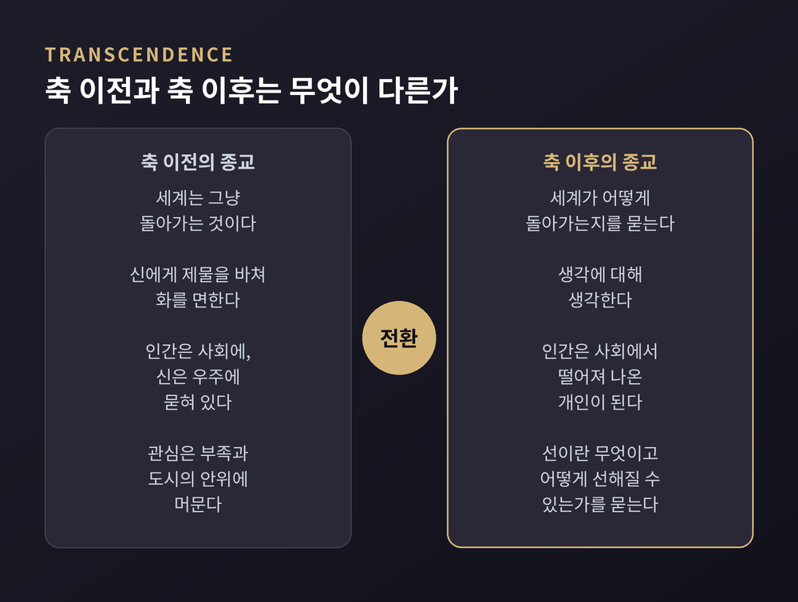
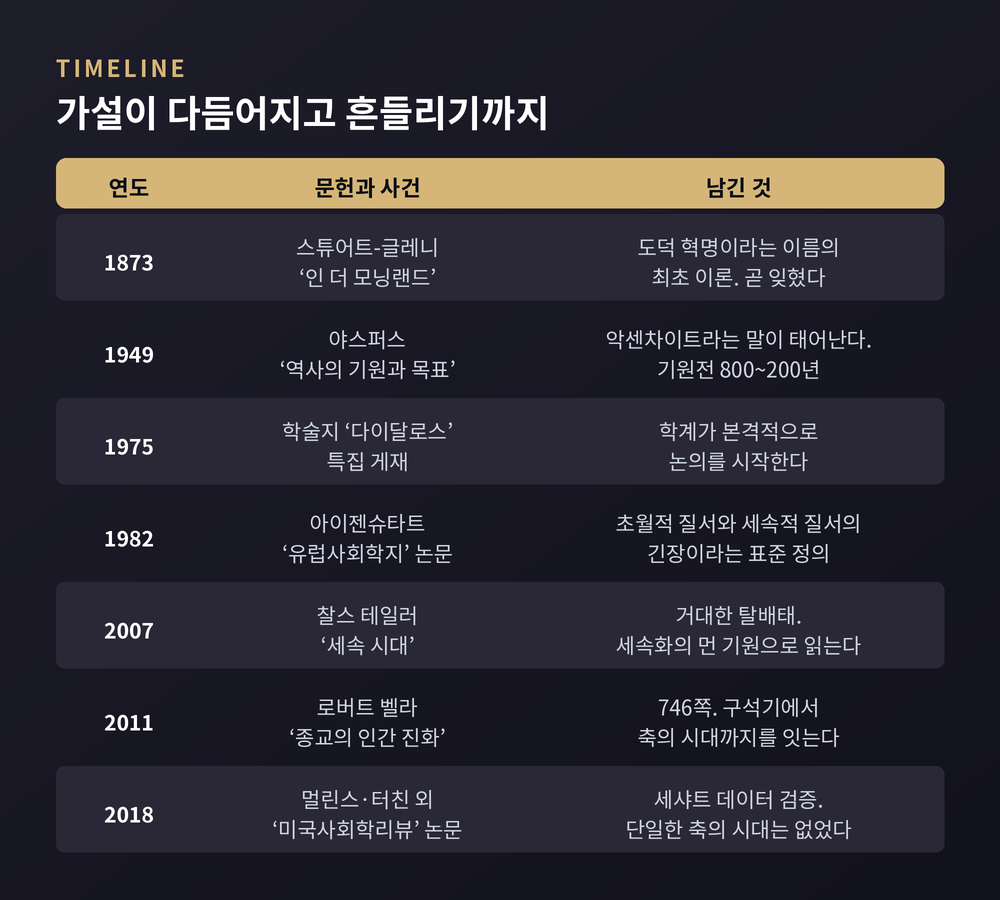
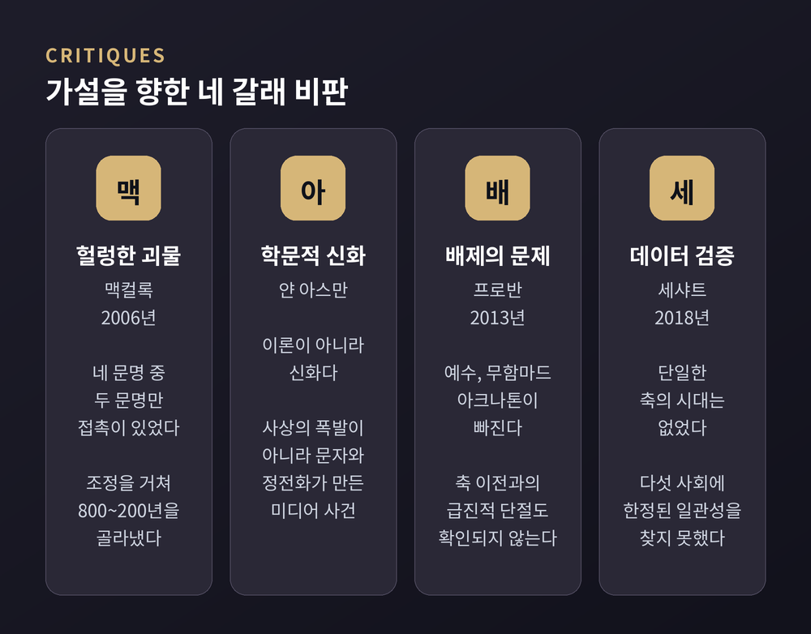
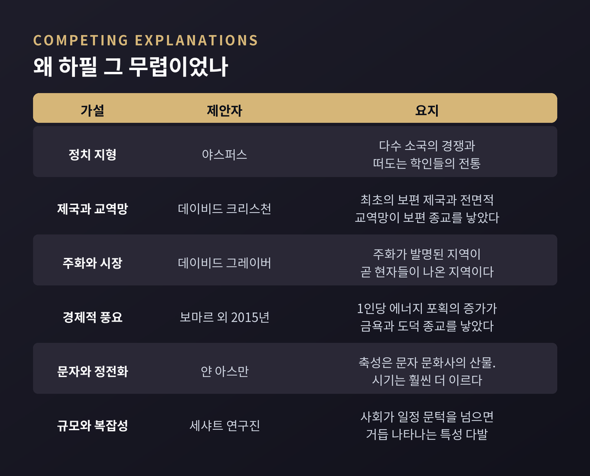

이번 글에서는 종교학과 역사학에서 오래 논쟁해 온 '축의 시대(Axial Age)' 가설을 정리해 보겠습니다. 기원전 800년에서 200년 사이, 중국과 인도와 그리스에서 서로 모르는 채 비슷한 생각이 터져 나왔다는 주장입니다. 먼저 가설의 내용을 살펴보고, 이어서 이 가설이 학계에서 어떤 비판을 받아 왔는지도 함께 보겠습니다.
미리 세 줄로 요약합니다.
축의 시대라는 말을 만든 사람은 독일의 정신의학자이자 철학자 카를 야스퍼스입니다. 1949년에 낸 『역사의 기원과 목표(Vom Ursprung und Ziel der Geschichte)』에서 처음 썼습니다. 영어권에는 1953년 번역본으로 소개됐습니다.
독일어 원어는 악센차이트(Achsenzeit)입니다. 바퀴가 축을 중심으로 돌듯, 인류의 정신사가 이 시기를 축으로 방향을 틀었다는 뜻입니다.
야스퍼스가 제시한 범위는 기원전 800년에서 기원전 200년입니다. 그는 이 육백 년 사이에 중국, 인도, 이란, 이스라엘, 그리스에서 "보편화하는 사유"가 서로 눈에 띄는 뒤섞임 없이 나란히 나타났다고 보았습니다.
그의 문장은 이렇게 이어집니다. "인류의 정신적 기초가 중국과 인도와 페르시아와 유대와 그리스에서 동시에, 그리고 독립적으로 놓였다."
한 가지 덧붙일 것이 있습니다. 이 착상이 야스퍼스의 독창은 아니었습니다. 18세기 이후 여러 학자가 같은 동시성을 이미 지적했고, 야스퍼스 본인도 폰 슈트라우스(1859)와 폰 라자울크스(1870)를 인용합니다. 심지어 1873년 존 스튜어트-글레니가 '도덕 혁명'이라는 이름으로 훨씬 정교한 이론을 내놓았습니다만, 야스퍼스 시대에는 완전히 잊혀 있었습니다.
야스퍼스가 직접 든 예시를 지역별로 나열하면 이렇습니다.
중국에서는 공자와 노자가 살았고 제자백가가 경쟁했습니다. 인도에서는 우파니샤드가 편찬되고 붓다가 등장했으며, 같은 흐름에서 자이나교가 갈라져 나왔습니다. 이란에서는 자라투스트라가 세계를 선과 악의 싸움으로 읽었습니다. 이스라엘에서는 엘리야로부터 이사야와 예레미야를 거쳐 제2이사야에 이르는 예언자들이 나왔습니다. 그리스에서는 파르메니데스와 헤라클레이토스, 그리고 플라톤이 나왔습니다.

야스퍼스는 배경 조건도 짚었습니다. 네 지역 모두 여러 소국이 안팎으로 다투는 정치 지형이었다는 점입니다. 그리고 세 지역 모두 떠돌아다니는 학인 전통을 낳고 제도화했습니다.
"중국의 은자와 유랑 사상가, 인도의 고행자, 그리스의 철학자, 이스라엘의 예언자는 서로 한 묶음이다." 야스퍼스의 표현입니다.
다만 연대를 정확히 보면 '동시'라는 말은 느슨합니다. 공자는 기원전 551년에서 479년, 소크라테스는 470년에서 399년을 살았습니다. 붓다의 연대는 학계에서 여전히 논쟁 중입니다. 자라투스트라는 더 심합니다. 키루스 대왕과 같은 시대로 보는 쪽으로 의견이 모이는 중이지만, 훨씬 이른 연대를 주장하는 견해도 오래 이어져 왔습니다.
이 시기의 공통점을 가장 자주 언급되는 두 단어로 압축하면 '초월'과 '내면성'입니다.
초월(transcendence)은 말 그대로 '넘어감'입니다. 찰스 테일러는 이 넘어감을 세 갈래로 풀이했습니다. 첫째, 세계가 그냥 돌아간다고 여기던 태도에서 세계가 어떻게 돌아가는지를 묻는 태도로의 이동입니다. 둘째, 생각에 대해 생각하는 2차적 사유의 등장입니다. 셋째, 부족신과 도시신을 달래고 먹이는 종교에서, 인간 전체의 운명과 '선(善)이란 무엇인가'를 사변하는 종교로의 이동입니다.
예전에는 신에게 제물을 바쳐 화를 면하는 것이 종교의 중심이었습니다. 지금 우리가 '종교'라고 부르는 것 — 어떻게 살아야 하는가를 묻는 일 — 은 이 전환 이후에 자리 잡았다는 이야기입니다.
내면성은 그 뒤따르는 결과입니다. 초월적 기준이 세워지면, 그 기준에 비추어 자기를 들여다보는 시선이 생깁니다. 에릭 푀겔린이 이 시기를 "존재의 위대한 도약"이라 부르며 사회적 가치에서 개인적 가치로 축이 옮겨갔다고 본 것도 같은 맥락입니다.

야스퍼스의 착상을 학문적 개념으로 벼려낸 사람은 이스라엘 사회학자 S. N. 아이젠슈타트입니다.
그의 정의는 지금도 표준으로 쓰입니다. 축의 시대 혁명이란 "초월적 질서와 세속적 질서 사이의 근본적 긴장이 출현하고, 개념화되고, 제도화된 것"이라는 규정입니다. 1982년 논문에서 제시하고 1986년 편저에서 확장했습니다.
이 정의의 강점은 종교적 내용이 아니라 구조를 본다는 데 있습니다. 저 너머에 기준이 생기면 지금 여기의 질서는 늘 미달이 됩니다. 그 간극을 관리하는 성직자와 지식인 계층이 부상하고, 이들은 왕을 비판할 수 있는 독립된 발판을 얻습니다.
로버트 벨라는 2011년 『종교의 인간 진화』에서 구석기시대부터 축의 시대까지를 한 권으로 잇습니다. 746쪽에 이르는 책입니다. 그는 축의 시대 사유의 핵심을 '이론적 태도', 곧 사유에 대한 사유로 보았고, "왕이 인도하는 개인"에서 "신이 인도하는 개인"으로의 이동을 말했습니다.
벨라의 관점에서 눈여겨볼 대목은 따로 있습니다. 각 단계에서 얻은 것은 사라지지 않고 새 조건 아래 재조직된다는 것입니다. 축의 시대가 이전 종교를 폐기한 것이 아니라 다시 짰다는 뜻입니다.
찰스 테일러는 2007년 『세속 시대』에서 이를 '거대한 탈배태'라 불렀습니다. 인간은 사회에, 신은 우주에 묻혀 있었는데 축의 시대 종교들이 그 묻힘을 처음 깨뜨렸다는 것입니다. 그리고 그 과정이 종교개혁에서 정점에 이르러 세속주의를 가능케 한 조건이 되었다고 봅니다. 축의 시대가 종교사의 한 장이 아니라 세속화의 먼 기원으로 읽히는 셈입니다.

여기까지가 가설의 자기 서술입니다. 이제 반대편을 보겠습니다.
옥스퍼드 교회사가 디아메이드 맥컬록은 2006년 한 서평에서 야스퍼스 테제를 "헐렁한 괴물"이라 불렀습니다. 네 개의 전혀 다른 문명에 걸친 온갖 다양성을 한 다발로 묶으려 드는데, 그중 두 문명만이 그 육백 년 동안 서로 접촉이 있었을 뿐이라는 지적입니다. 그는 야스퍼스가 "조정을 거쳐" 800~200년을 골라냈다는 점도 짚었습니다.
이집트학자 얀 아스만의 비판은 더 근본적입니다. 그는 축의 시대를 "이론이 아니라 학문적 신화"라고 말합니다. 존재했다 하더라도 그것은 사상의 자생적 폭발이 아니라 문자와 정전화가 만든 '미디어 사건'이라는 것입니다.
아스만이 이집트와 메소포타미아 배제 문제를 다루는 방식은 특히 흥미롭습니다. 축의 시대 정전들은 끊기지 않은 해석 전통을 타고 전해져 우리에게 익숙합니다. 반면 이집트와 메소포타미아 문헌은 최근 150년 사이에야 재발견됐습니다. 그러니 축의 시대의 특별함은 역사의 성질이 아니라 전승의 비대칭성에서 온다는 진단입니다.
실제로 아스만이 잡은 축성(axiality)의 기점은 훨씬 이릅니다. 메소포타미아는 기원전 3천년기 후반, 이집트는 기원전 2천년기 초입니다. 야스퍼스가 낸 창보다 천 년 이상 앞섭니다.
여기에 배제된 인물 문제가 더해집니다. 이언 프로반은 2013년 저서에서 예수, 무함마드, 아크나톤처럼 정의에 들어맞지 않는 인물들이 빠진다는 점을 문제 삼았습니다. 축 이전과 축 이후 사이의 급진적 단절이 확인되지 않는다는 지적도 함께입니다.

가장 실증적인 반론은 2018년에 나왔습니다.
멀린스와 터친 등 아홉 명의 연구진이 세샤트 글로벌 역사 데이터뱅크를 써서 축의 시대 주장들을 체계적으로 검증했습니다. 『미국사회학리뷰』 83권 3호에 실린 논문입니다.
결론은 단정적입니다. "인류사에 단일한 축의 시대는 없었다." 대신 발견된 것은 평등주의적 이상과 정치권력에 대한 제약이 사회정치적 복잡성과 함께 공진화하는 범문화적 병행 현상이었습니다.
2019년에는 후속 단행본이 나왔고, 『네이처』가 이를 보도했습니다. 공저자 제니 레디시의 말은 짧고 분명합니다. "그 다섯 사회에 한정된 일관된 축의 시대를 우리는 찾을 수 없었다."
다만 연구진이 개념 전체를 버린 것은 아닙니다. 특정 시기에 묶인 '축의 시대'는 부정하되, 사회가 일정한 규모와 복잡성의 문턱을 넘을 때마다 거듭 나타나는 특성 다발로서의 '축성'은 남겨두는 쪽입니다.
시대 구분의 타당성과 별개로, 비슷한 시기 병행 현상을 무엇이 설명하는가라는 물음은 남습니다. 경쟁하는 답이 여럿입니다.
데이비드 크리스천은 최초의 보편 제국과 전면적 교역망을 꼽습니다. 데이비드 그레이버는 주화의 발명 시기와 지역이 현자들의 출현과 거의 겹친다는 점에 주목합니다. 주화가 시장과 종교를 이념적으로 갈라놓았다는 해석입니다.
보마르 연구진은 2015년 『커런트 바이올로지』 논문에서 다른 답을 내놓았습니다. 기원전 500년에서 300년 사이 양쯔강·황하 유역과 동지중해와 갠지스강 유역에서 금욕과 자기 규율을 강조하는 유사한 전통들이 나타났는데, 이를 설명하는 것은 정치적 복잡성이 아니라 1인당 물질적 풍요의 증가라는 주장입니다. 이들은 각 지역의 1인당 1일 에너지 포획량을 시계열로 재구성해 근거로 삼았습니다.

끝으로 한 마디만 더 드리겠습니다.
축의 시대 가설의 현재 위치를 가장 정확히 요약한 문장은 벨라와 요아스가 2012년 편저 첫 쪽에 적은 것입니다. "널리, 그러나 보편적이지는 않게 받아들여져 왔다."
이 말이 어정쩡하게 들릴 수도 있겠습니다. 저는 오히려 정직한 표현이라고 생각합니다. 기원전 1천년기 중반에 인류의 사유가 크게 달라졌다는 관찰 자체는 여전히 힘이 있습니다. 다만 그것을 하나의 '시대'로 잘라 다섯 지역에 도장을 찍는 순간, 잘린 자리마다 이집트가 빠지고 예수가 빠지고 연대가 어긋납니다.
그래서 최근 논의는 시대 구분 대신 '축성'이라는 반복 가능한 성질로 무게중심을 옮기고 있습니다. 언제 일어났느냐가 아니라, 무엇이 일어나면 그것을 축적 전환이라 부를 수 있느냐를 묻는 방향입니다.
가설이 틀렸으니 버려야 하느냐고 물으신다면, 저는 그렇게 답하지 않겠습니다. 좋은 가설은 답이 맞아서가 아니라 물음을 열어서 오래 남습니다. 축의 시대는 칠십 년 넘게 그 일을 해 왔습니다.